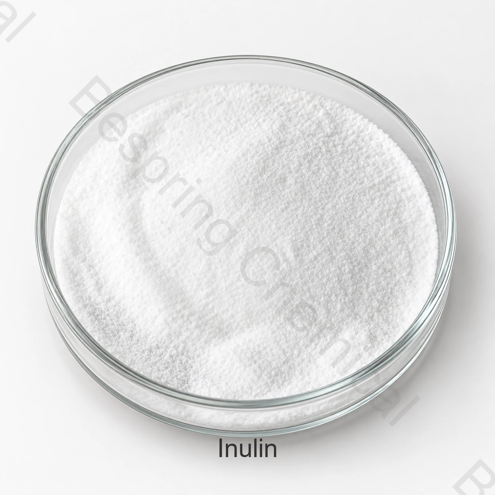

Fournisseur d'inuline de qualité alimentaire
Indiquer la catégorie ou le type exact, la demande, la quantité, l'emballage, la destination et les documents requis.
Ingrédient alimentaire · Fibre alimentaire et ingrédient de texture · INU
L'inuline est un fructan dérivé de plantes utilisé pour l'enrichissement, le gonflement et la texture des fibres alimentaires; la source botanique et le degré de polymérisation affectent les performances.

Image du produit · confirmer la qualité et l'emballage lors de la commande
Partagez la qualité exacte, l'application, la quantité, l'emballage, la destination et les documents requis.
GradeClasse alimentaire, avec qualification de source
SpécificationDocument actuel disponible auprès des ventes
EmballageConfirmé dans l'offre spécifique à la source
Preuves par lotsACO actuel disponible pour les lots fournis
Réponse directe du produit
L'inuline est un fructan dérivé de plantes utilisé pour l'enrichissement, le gonflement et la texture des fibres alimentaires; la source botanique et le degré de polymérisation affectent les performances.
L'aptitude commerciale dépend de la source exacte, de la fonction prévue, du processus alimentaire complet et des règles du marché de destination. Cette page soutient la qualification préliminaire; la spécification actuelle signée et l'ACO par lot fourni par les ventes régissent la commande.
Liste de contrôle pour les achats
Comparer la qualité offerte, les exigences de demande et les conditions commerciales avant de demander un échantillon ou de passer une commande.
Indiquer la catégorie ou le type exact, la demande, la quantité, l'emballage, la destination et les documents requis.
Demander une offre spécifique à la source avec les spécifications actuelles, Incoterm, destination et la fenêtre de livraison.
Partagez la formule complète, les conditions de processus, la fonction cible et les tests de produits finis.
Qualifier l'identité, les méthodes, l'ACO, la SDD, les certificats, les attentes en matière de traçabilité et de contrôle du changement.
Examen de la demande
Il s'agit de zones de dépistage, et non d'approbations universelles, de recommandations posologiques ou de résultats garantis.
Confirmer la composition exacte des ingrédients et la base de mesure des fibres alimentaires acceptée. Évaluer la texture, le format de service et la déclaration de produit fini prévue.
Mesurer la demande d'eau, le comportement de la pâte ou de la pâte et la texture finie. Comparer les essais par cuisson ou extrusion et stockage représentatif.
Vérifiez le mouillage, la dispersion, la sédimentation et l’effet sensoriel dans la formulation prévue. Distinguez les composants solubles et insolubles lors de la fixation des objectifs d’acceptation.
Définir la rétention d'eau et la texture requises avant de changer la formule. Évaluer le produit complet après son cycle de traitement et de stockage.
Sélection technique
Identifier l'usine source, la voie de transformation et tout transporteur ou ingrédient ajouté. Confirmer que les changements de source sont inclus dans le processus de contrôle du changement du fournisseur.
Confirmer si l'ingrédient exact est admissible à la déclaration de fibre prévue. Accepter la méthode analytique et les exigences relatives à l'allégation de produit fini pour la destination.
Utiliser le processus d'eau, de température et de mélange pour évaluer la dispersion. Inclure les sédiments, la texture et la saveur dans les critères d'acceptation.
Demandez des preuves microbiologiques, allergéniques et d’origine à jour pour la source exacte. Vérifiez leur correspondance avec l’aliment prévu et les contrôles de fabrication.
Documentation technique privée
Bespring Chemical ne publie pas les spécifications du produit pour cet ingrédient en ligne. Contactez les ventes pour les spécifications actuelles spécifiques à la source ou TDS et confirmez que sa révision, ses méthodes et ses critères correspondent à vos exigences d'achat.
Demander la spécification ou la SDT, la SDD, les méthodes d'analyse, l'ACO représentatif et l'ACO par lots.
Vérifier la sécurité alimentaire, l'origine, l'allergène, le casher, le halal et les certificats de site applicables pour la qualité exacte et la source.
Revoir la Textes du Codex et ressources de la FAO en matière de normes alimentaires, puis appliquer les règles actuelles du marché de destination aux aliments finis.
Note de conformité: Une identité ou une norme internationale n'autorise pas chaque demande. Confirmer la catégorie d'aliments, le niveau d'utilisation, la déclaration d'étiquette et d'autres exigences dans chaque marché de destination.
Stockage et manutention
Questions de l'acheteur
L'inuline est un fructan d'origine végétale utilisé pour l'enrichissement en fibres alimentaires, le grossissement et la texture; la source botanique et le degré de polymérisation affectent les performances.
CAS 9005-80-5 ; ingrédient alimentaire soumis à la définition du marché ; fructane végétal de longueur de chaîne variable. Pour les familles et produits formulés, confirmez le membre exact et la composition complète.
Bespring Chemical ne publie pas de spécifications pour ce produit en ligne. Contactez les ventes pour la spécification spécifique à la source ou TDS, méthodes et ACO représentative.
Demander la spécification ou la SDT actuelle, la SDD, l'ACO représentatif et le lot, ainsi que les documents pertinents sur la salubrité des aliments, les allergènes, l'origine, le casher, Halal et le site pour la source exacte.
Indiquer la catégorie ou le type exact, l'application, les besoins de performance critiques, la quantité, l'emballage, le marché de destination, les certificats requis, Incoterm et la date de livraison.
Contenu mis à jour 2026-09-13.
Approvisionnement connexe
Parcourez le portefeuille complet et les dossiers de produits techniques disponibles.
Discutez d'une spécification privée, de documents, d'un échantillon et d'exigences commerciales.
Examiner l'approvisionnement et le soutien à l'exportation pour l'approvisionnement international en ingrédients.
Approvisionnement fondé sur les spécifications
Partager la catégorie ou le type exact, l'application, les exigences d'efficacité critiques, la quantité, l'emballage, la destination et la liste des documents pour une proposition pertinente.
Dites-nous votre marché de qualité et de destination afin que nous puissions confirmer quels documents sont disponibles pour votre commande.
Une référence externe n'est pas un certificat de lot ou une spécification de produit Bespring.